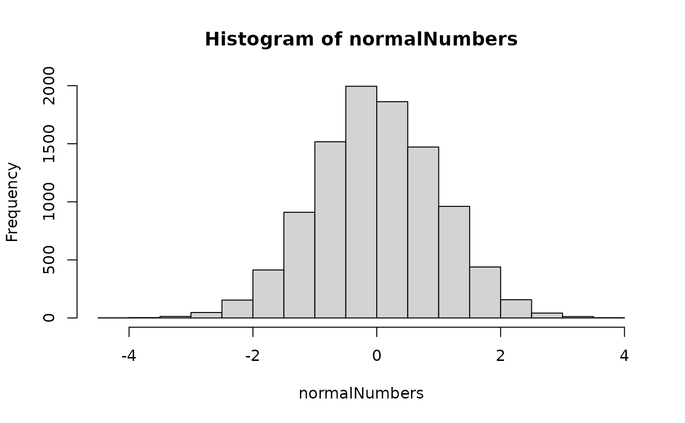
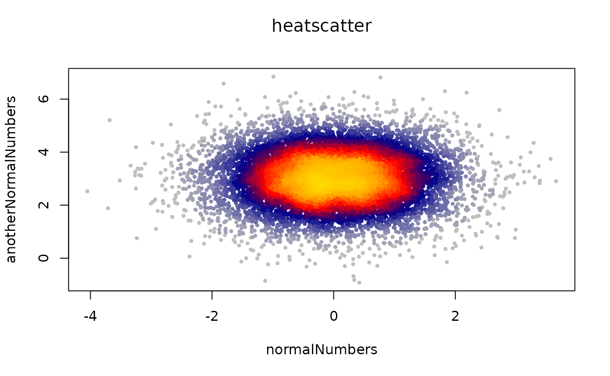
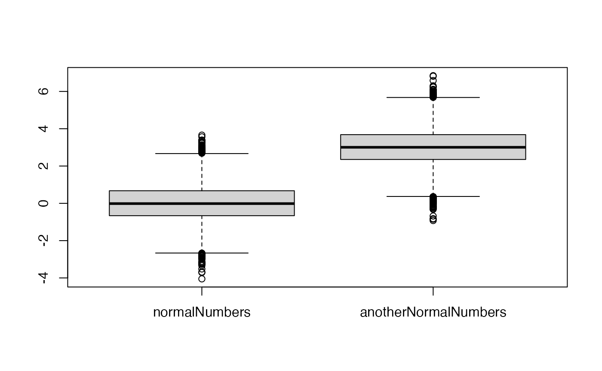
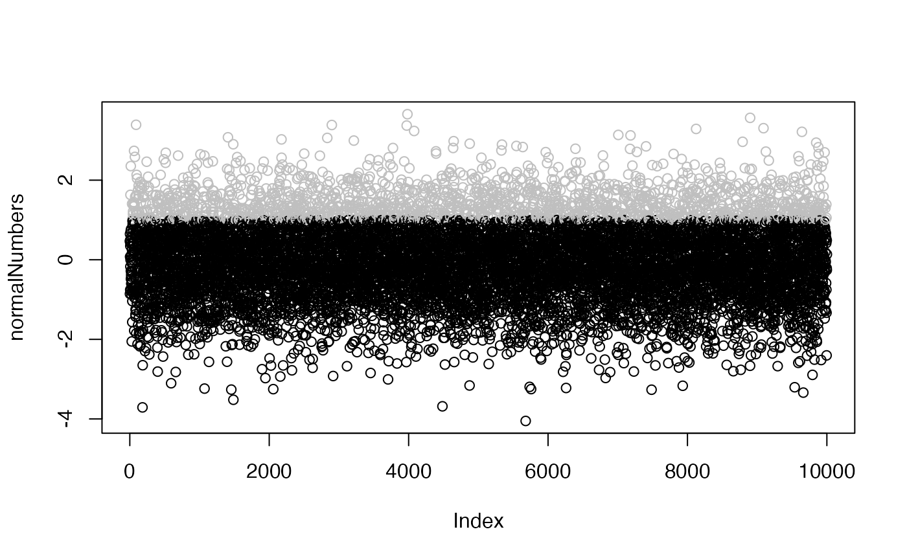
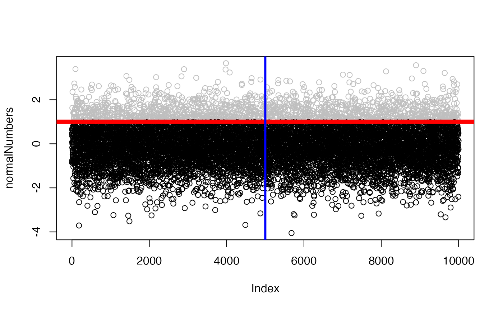

Introduction to R
Matheus Januario, Andressa Viol, and Daniel Rabosky
Jan 2024
Source:vignettes/intro_r.Rmd
intro_r.RmdLearning objectives
- Learn R basic syntax
- Learn R basic coding: objects, vector calculations, etc
- Learn basic plotting and annotation functions
- Learn the basic object classes we will use
- Learn what is expected in each lab
Introduction
Here we will assume you have successfully installed R and RMarkdown, and RStudio, if you intend to use it. If you have not installed the required software already, please check out our “Installing Software” tutorial available as a supplementary PDF to the article describing this package.
Most of the output that R will show you is included in this file along with the input code, but we still recommend you to actually run the code in R yourself. This tutorial is peppered with questions/exercises that test your comprehension and guide your experimentation in R. Do these in order to better understand the tools and concepts talked about.
R basics
The “>” symbol in the bottom of the console means that R is waiting for you to send it a command. However, while R is calculating, or doing some other operation, you will see the last line completely blank.
If R thinks that you have not finished typing, it will change the “>” to a “+”, indicating that it is waiting for you to finish the command in order to run it. If this occurs unintentionally, it probably means you forgot to close a parenthesis ( = ( )), a quotation mark ( = ” “), or a curly bracket ( = { }).
Let’s start by sending R a classic command, a message to be printed by the console. Copy and paste the line of code below (the monospaced text within the light gray box below) into your console, then click Enter or Ctrl/Command + Enter. This action of sending commands to the console (whether by copy-pasting or directly typing) is called “running” code.
The following command prints a message to your console:
print(x = "hello world")## [1] "hello world"Before running anything else, let’s talk about what R does not run – these lines are called “comments”. The hashtag (#) in the code line below signals to R where the comment begins. Anything to the right of the hashtag within the same line will never be run by R. For instance, if we run:
print(x = "This will be printed in the console") #"This will not"## [1] "This will be printed in the console"Important: You are highly encouraged to annotate your code and answers with comments. There is a saying in programming that “no one programs worse than yourself 6 months ago” – so it is a nice idea to fill your future R scripts with comments that will allow you to remember what your reasoning was (more on what scripts are later in this tutorial).
Comprehension Question: What happens if you put the “#” in the middle of the character string you saw in the line of code above (i.e. “This will be printed in the console”)? Figure it out! Add the hashtag wherever you want, then press enter and try to figure out how the hashtag character works.
R as a vector calculator
Vectors will have multiple meanings in this class. In the lab on selection (#03), for instance, vectors will have the meaning they usually have in physics: arrows that represent something that has a direction and a magnitude (e.g., natural selection itself). In other classes, we will use vectors as mathematical objects that allow us to do matrix multiplication. In R, however, vectors are a series of elements of the same class which are ordered one after the other (and the order may have meaning or not).
For instance, vectors might be made out of numbers. We will create
one such numeric vector by using the seq()
(“sequence”) function.
one_to_thirteen <- seq(from = 1, to = 13, by = 1)Do not worry about understanding the “<-” for now. We will explain it further down this tutorial. What I will say for now is that we stored this number sequence. We can access this “stored” content by typing in the console:
one_to_thirteen## [1] 1 2 3 4 5 6 7 8 9 10 11 12 13We can check the class of this vector (i.e. the data type) to confirm that it is numeric.
class(one_to_thirteen)## [1] "numeric"We can create many different numeric vectors by changing the parameters (“from”, “to”, “by”). For instance:
seq(from = -0.56, to = 1, by = 0.2)## [1] -0.56 -0.36 -0.16 0.04 0.24 0.44 0.64 0.84Character vectors also exist. Let’s use one that is already pre-created in R, the “LETTERS” character vector.
LETTERS## [1] "A" "B" "C" "D" "E" "F" "G" "H" "I" "J" "K" "L" "M" "N" "O" "P" "Q" "R" "S"
## [20] "T" "U" "V" "W" "X" "Y" "Z"
class(LETTERS)## [1] "character"
# Numbers can be converted to characters as well:
one_to_thirteen_character <- as.character(x = one_to_thirteen)
# Characters are always marked with quotation marks.
one_to_thirteen_character## [1] "1" "2" "3" "4" "5" "6" "7" "8" "9" "10" "11" "12" "13"
# Even if you can read
# something as a number, R interprets as a character everything
# that is inside quotation marks.
class(one_to_thirteen_character)## [1] "character"So, what does it mean to put things into parentheses? Do the commas matter? All of these details make up the R syntax for functions. In R, the following format is always used:
function( first_argument = value , second_argument = value , third_argument = value , …)
So, the arguments of a function are inside its parentheses, are separated by commas, and have an explicit order. R does not read spaces (i.e., ” ” ) and tabs, so you can use spaces and tabs to improve the human readability of your code.
We can also do operations on vectors. For instance, we can calculate
the mean of a numeric vector using the mean() function:
mean(x = one_to_thirteen)## [1] 7Though every function argument has a name, we can omit explicitly including the name of the function (as above) if we write the argument inputs in the same order as the arguments themselves. For example, the mean function’s first argument is the vector for which we will calculate the mean, and the argument’s name is “x”. We can specify the “x” argument input explicitly like this:
mean(x = one_to_thirteen)## [1] 7Or, if we put the desired input for “x” as the first thing inside the function, we don’t have to explicitly name the argument by writing “x =” as we do above. We can simply write:
mean(one_to_thirteen) ## [1] 7Note that to have a full list of the arguments of a function (so you can use them in the correct order) you have to look at the help page of that particular function. This is a topic we will approach further down in this tutorial.
In R, the order of mathematical operations follows the rules of algebra. We will recap this by showing you the differences between the following commands:
2 + 3## [1] 5
2 * 3 + 1## [1] 7
2 * (3 + 1)## [1] 8Other mathematical functions worth noting:
9 ^ 2 #this is exponentiation## [1] 81
log(8, base = 2) #taking the logarithm of a number given a specific base## [1] 3Most of those operations can be made with vectors, which makes R a very powerful tool for quick calculation:
one_to_ten <- 1:10
one_to_ten^2## [1] 1 4 9 16 25 36 49 64 81 100You can also “nest” functions, which means putting one function inside another. This can avoid clogging your environment with many intermediary objects, however it comes at the cost of making your code less readable - so we recommend using this technique parsimoniously.
# Code below will take the log2 of numbers from 2 to
# 100 by an even space of 2 units
log(seq(2, 100, by = 2), base = 2) ## [1] 1.000000 2.000000 2.584963 3.000000 3.321928 3.584963 3.807355 4.000000
## [9] 4.169925 4.321928 4.459432 4.584963 4.700440 4.807355 4.906891 5.000000
## [17] 5.087463 5.169925 5.247928 5.321928 5.392317 5.459432 5.523562 5.584963
## [25] 5.643856 5.700440 5.754888 5.807355 5.857981 5.906891 5.954196 6.000000
## [33] 6.044394 6.087463 6.129283 6.169925 6.209453 6.247928 6.285402 6.321928
## [41] 6.357552 6.392317 6.426265 6.459432 6.491853 6.523562 6.554589 6.584963
## [49] 6.614710 6.643856A quick tip: If you make a mistake (which everyone
does when programming), a shortcut for not having to type or paste
everything in the terminal again is to put the cursor in the console,
and then press the up arrow of your keyboard. By using the up and down
arrows you are able to navigate through your history of typed commands
(since the start of your current R session). This shortcut also allows
you to try new things with small changes faster (try for instance to
press the up arrow now, then change something in an argument since the
last time you used the seq() function). Does it work like
you predicted it would?
We advise you, however, to use this shortcut only as a shortcut, not as your standard practice in R. Your standard practice should be to use scripts.
Objects in R
In R, we can also store values and elements (e.g., numbers, letters, strings, etc). We call those stored things “objects”. The term is pretty vague, and this is because there are many different types of objects. From numbers to characters, spanning matrices, functions, phylogenies, and many others. Actually, the fact that R is open source means that there are as many potential classes of “objects” as the creativity of R programmers throughout the world can create.
We store each object by using the “<-” character (a.k.a. “attribution arrow”).
zero_to_ten <- seq(from = 0, to = 10, by = 2) #here we use the seq() function,
# attributed to the "zero_to_ten" object
# Note we also use the "from", "to", and "by" arguments.We can check what is stored inside an object by typing its name in the console:
zero_to_ten## [1] 0 2 4 6 8 10You can also use “=” as a synonym of “<-”.
Finally, you can also use the arrow backwards (i.e. “->”), as the tip of the arrow must always point to the object’s name - not the object’s contents. However, this usage is controversial, and some R users consider it bad practice.
Objects can also be modified. You can do this by:
- overwriting an object (assigning a different thing to the same name):
one_to_ten <- seq(from = 1, to = 10, by = 0.5)
one_to_ten## [1] 1.0 1.5 2.0 2.5 3.0 3.5 4.0 4.5 5.0 5.5 6.0 6.5 7.0 7.5 8.0
## [16] 8.5 9.0 9.5 10.0
# Note that the elements themselves
# (and the number of elements) changed- doing mathematical operations on an object:
one_to_ten + 0.56 #addition (or) subtraction## [1] 1.56 2.06 2.56 3.06 3.56 4.06 4.56 5.06 5.56 6.06 6.56 7.06
## [13] 7.56 8.06 8.56 9.06 9.56 10.06 10.56
one_to_ten*2 #multiplication## [1] 2 3 4 5 6 7 8 9 10 11 12 13 14 15 16 17 18 19 20
one_to_ten/2 #division## [1] 0.50 0.75 1.00 1.25 1.50 1.75 2.00 2.25 2.50 2.75 3.00 3.25 3.50 3.75 4.00
## [16] 4.25 4.50 4.75 5.00- or by passing an object into compatible functions:
paste("text pasted to", one_to_ten)## [1] "text pasted to 1" "text pasted to 1.5" "text pasted to 2"
## [4] "text pasted to 2.5" "text pasted to 3" "text pasted to 3.5"
## [7] "text pasted to 4" "text pasted to 4.5" "text pasted to 5"
## [10] "text pasted to 5.5" "text pasted to 6" "text pasted to 6.5"
## [13] "text pasted to 7" "text pasted to 7.5" "text pasted to 8"
## [16] "text pasted to 8.5" "text pasted to 9" "text pasted to 9.5"
## [19] "text pasted to 10"Some types of modifications change the class of the object.
## [1] "character"Note that, by not using the “<-” in any of the lines of code above, we haven’t actually stored any of our changes to the object. However, any of the modifications above could be stored by using the “<-” and assigning the modified object to a name (even the same name as the old object, though this will overwrite it).
Important: Whenever you assign something to an object, R will store a unique copy of that information. Two object names never point to the same data. If they are equal in their contents, it’s simply because they are two objects containing indistinguishable content. This means that variables are not automatically recalculated as Excel-like formulas do. If you change an object that is used further down your script, you’ll need to re-run the calculation/usage of that object to get a new result.
Appending elements
You can also append elements to a vector using the c()
(“concatenate”) function
c(one_to_ten, NA, 34)## [1] 1.0 1.5 2.0 2.5 3.0 3.5 4.0 4.5 5.0 5.5 6.0 6.5 7.0 7.5 8.0
## [16] 8.5 9.0 9.5 10.0 NA 34.0But note that doing this might modify the class of your vector, depending on how you do it. R will try to guess which class the vector should be, which sometimes is not the class you want the vector to be.
## [1] "character"Usually, you can convert an object to a different class. Below, I am
converting our new_one_to_ten object, currently a character
vector, into a factor vector. A “factor” is a class of object that helps
R categorize data. This is not very important for now, but the intention
here is to show that some class conversions are simple.
## [1] "factor"
new_one_to_ten <- as.character(new_one_to_ten)
class(new_one_to_ten)## [1] "character"But sometimes you will lose information if you try to convert a vector, depending on the details:
as.numeric(new_one_to_ten)## Warning: NAs introduced by coercion## [1] 1.0 1.5 2.0 2.5 3.0 3.5 4.0 4.5 5.0 5.5 6.0 6.5 7.0 7.5 8.0
## [16] 8.5 9.0 9.5 10.0 NA NAAbove, the last element (“word”) was converted to an NA. Because “word” has no analogous numerical value, R assigns it an NA value. If you do this conversion and overwrite the object with its converted values, its previous value (i.e. “word”) is lost forever.
You might have noted that sometimes R “guesses” what you mean. This is because R is a “reflective programming language”, which means that if you give incomplete information to R, it will try to figure out by itself what the blanks mean. Sometimes this will be helpful, sometimes it will not. That is why understanding those details is important, so you can troubleshoot small problems by yourself (a skill that will improve with time and practice).
Indexing
When we dealt with vectors in the above lines, you might have seen the bracketed numbers (e.g., “[1]”) in the output R printed in the console. Those numbers mark the position of each element in the object printed in the console. R will always tell you the reference position for each element whenever it has to break a line in the console printing for visualization purposes. For instance:
#Pay attention to the bracketed numbers:
onehundred_to_twohundred <- 100:200
onehundred_to_twohundred <- onehundred_to_twohundred + 1.53
onehundred_to_twohundred ## [1] 101.53 102.53 103.53 104.53 105.53 106.53 107.53 108.53 109.53 110.53
## [11] 111.53 112.53 113.53 114.53 115.53 116.53 117.53 118.53 119.53 120.53
## [21] 121.53 122.53 123.53 124.53 125.53 126.53 127.53 128.53 129.53 130.53
## [31] 131.53 132.53 133.53 134.53 135.53 136.53 137.53 138.53 139.53 140.53
## [41] 141.53 142.53 143.53 144.53 145.53 146.53 147.53 148.53 149.53 150.53
## [51] 151.53 152.53 153.53 154.53 155.53 156.53 157.53 158.53 159.53 160.53
## [61] 161.53 162.53 163.53 164.53 165.53 166.53 167.53 168.53 169.53 170.53
## [71] 171.53 172.53 173.53 174.53 175.53 176.53 177.53 178.53 179.53 180.53
## [81] 181.53 182.53 183.53 184.53 185.53 186.53 187.53 188.53 189.53 190.53
## [91] 191.53 192.53 193.53 194.53 195.53 196.53 197.53 198.53 199.53 200.53
## [101] 201.53You can also use these element positions to refer to specific elements inside your object.
onehundred_to_twohundred[56] #if you want the 56th element## [1] 156.53
onehundred_to_twohundred[24] #if you want the 24th element## [1] 124.53
onehundred_to_twohundred[13] #if you want the 13th element## [1] 113.53You can also modify specific elements inside your object.
onehundred_to_twohundred[22] <- 0
onehundred_to_twohundred[22] ## [1] 0
onehundred_to_twohundred## [1] 101.53 102.53 103.53 104.53 105.53 106.53 107.53 108.53 109.53 110.53
## [11] 111.53 112.53 113.53 114.53 115.53 116.53 117.53 118.53 119.53 120.53
## [21] 121.53 0.00 123.53 124.53 125.53 126.53 127.53 128.53 129.53 130.53
## [31] 131.53 132.53 133.53 134.53 135.53 136.53 137.53 138.53 139.53 140.53
## [41] 141.53 142.53 143.53 144.53 145.53 146.53 147.53 148.53 149.53 150.53
## [51] 151.53 152.53 153.53 154.53 155.53 156.53 157.53 158.53 159.53 160.53
## [61] 161.53 162.53 163.53 164.53 165.53 166.53 167.53 168.53 169.53 170.53
## [71] 171.53 172.53 173.53 174.53 175.53 176.53 177.53 178.53 179.53 180.53
## [81] 181.53 182.53 183.53 184.53 185.53 186.53 187.53 188.53 189.53 190.53
## [91] 191.53 192.53 193.53 194.53 195.53 196.53 197.53 198.53 199.53 200.53
## [101] 201.53Time for a pause and ponder
Now is a good moment to ponder a bit. Make sure you understand everything that was typed in the console up to here. Go back and re-read things again if you like. If things printed in the console still do not make sense, ask a more experienced user to help you.
Matrices
Just as in algebra, you can think of a matrix as a series of vectors bound together:
## [1] "numeric"## [1] "numeric"
# You can bind vectors (or matrices) by rows...
tentative_matrix1 <- rbind(vector1, vector2)
class(tentative_matrix1)## [1] "matrix" "array"## [1] "matrix" "array"
#and each action generates different outputs:
tentative_matrix1## [,1] [,2]
## vector1 1 3
## vector2 4 5
tentative_matrix2## vector1 vector2
## [1,] 1 4
## [2,] 3 5
# Note also that doing...
tentative_matrix1 * tentative_matrix2## [,1] [,2]
## vector1 1 12
## vector2 12 25
#... is different from doing:
tentative_matrix1 %*% tentative_matrix2## vector1 vector2
## vector1 10 19
## vector2 19 41Comprehension Question: Which of the options above follow linear algebra rules for the multiplication of matrices? Make sure you know this difference.
Logical tests
We can make logical tests to evaluate the contents of a vector. In a logical test, the result is a binary “TRUE” or “FALSE”.
numbers <- seq(-10, 10, by = 1)
numbers## [1] -10 -9 -8 -7 -6 -5 -4 -3 -2 -1 0 1 2 3 4 5 6 7 8
## [20] 9 10
test_result <- numbers > 0 # here we are asking which numbers are larger then 0
test_result## [1] FALSE FALSE FALSE FALSE FALSE FALSE FALSE FALSE FALSE FALSE FALSE TRUE
## [13] TRUE TRUE TRUE TRUE TRUE TRUE TRUE TRUE TRUE
numbers == 10 # here we are asking which number is exactly equal to 10## [1] FALSE FALSE FALSE FALSE FALSE FALSE FALSE FALSE FALSE FALSE FALSE FALSE
## [13] FALSE FALSE FALSE FALSE FALSE FALSE FALSE FALSE TRUE
# Note that the "is equal" test is created by two consecutive equal signs
# (i.e., "=="), since just one equal sign ("=") has the same meaning as the
# attribution arrow (i.e., "<-").Logical tests are useful when evaluating things in R or in “control flow” (a.k.a. decision making) inside a function (more on that in the future).
Data frames
You can think of a data frame as a matrix whose contents can be of multiple classes.
df <- data.frame(test_result, numbers)
class(df)## [1] "data.frame"We can access the column names of a data frame using the function
colnames(). Thus, we can change the name of the columns in
a data frame by reassigning this object to the new names, as below.
## is_positive number
## 1 FALSE -10
## 2 FALSE -9
## 3 FALSE -8
## 4 FALSE -7
## 5 FALSE -6
## 6 FALSE -5
## 7 FALSE -4
## 8 FALSE -3
## 9 FALSE -2
## 10 FALSE -1
## 11 FALSE 0
## 12 TRUE 1
## 13 TRUE 2
## 14 TRUE 3
## 15 TRUE 4
## 16 TRUE 5
## 17 TRUE 6
## 18 TRUE 7
## 19 TRUE 8
## 20 TRUE 9
## 21 TRUE 10In our example data frame df, each column is storing
information of a different class.
# First column stores a logical vector:
class(df[,1])## [1] "logical"
# Second column stores a numerical vector:
class(df[,2])## [1] "numeric"These two handy functions print the first or last couple rows of a data frame:
# First 7 rows printed:
head(df, n = 7)## is_positive number
## 1 FALSE -10
## 2 FALSE -9
## 3 FALSE -8
## 4 FALSE -7
## 5 FALSE -6
## 6 FALSE -5
## 7 FALSE -4
# Last 5 rows printed:
tail(df, n = 5)## is_positive number
## 17 TRUE 6
## 18 TRUE 7
## 19 TRUE 8
## 20 TRUE 9
## 21 TRUE 10Indexing of matrices and data frames is analogous to vector indexing, with the difference being that it will include two numbers separated by a comma: the first refers to the row, and the second number to the column of the object.
df[7,1] # selecting the object in the 7th row and 1st column## [1] FALSE
df[7:15, 1:2] # taking objects in the 7th to the 15th rows and in both columns## is_positive number
## 7 FALSE -4
## 8 FALSE -3
## 9 FALSE -2
## 10 FALSE -1
## 11 FALSE 0
## 12 TRUE 1
## 13 TRUE 2
## 14 TRUE 3
## 15 TRUE 4If you omit numbers on either side of the comma, R will assume you meant every row or every column. Thus, the line below will return the same as the line above:
df[7:15,]## is_positive number
## 7 FALSE -4
## 8 FALSE -3
## 9 FALSE -2
## 10 FALSE -1
## 11 FALSE 0
## 12 TRUE 1
## 13 TRUE 2
## 14 TRUE 3
## 15 TRUE 4Indexing matrices and data frames like this is called “subsetting”, because you are taking a subset of the full object. If you forget to include the comma when subsetting matrices or data frames, R will return an error stating that you didn’t specify correctly the dimensions of the object. I recommend you try this to get familiarized with this type of error, as forgetting to type a comma (or typing it incorrectly) is a common error when getting familiar with programming.
Functions
Up to now we have used a lot of functions, though we haven’t yet defined what they are. Functions are objects that can or cannot (depending on the specifics) modify another object, and that always return (“output”) something.
For instance, the mean() function returns one number,
which is the average of the numbers inside the inputted vector.
Not all returns will be printed in the console. Sometimes this will be because the returned object cannot be printed in the console (a graph, for instance, which we will see later). More commonly, you will not see anything printed in the console because you will assign the output of a function to be directed to an object.
You can create your own functions (and you will in this class), or you can download a package of functions created by someone else (which is something you will also do). The second option is also called “installing a package”.
Installing and running packages
One of the main advantages of R being an open source software is that
people across the whole world can contribute with new software that uses
the R language. Usually, this new software come in literal packages of
functions. For instance, we can install the package “Analysis of
Phylogenetic Evolution” (ape; Popescu et al, 2012) by
running the following command in R’s console:
# Running the code below, you will install ape from The Comprehensive R Archive
# Network (a.k.a. CRAN - more about it in the additional reading).
install.packages("ape")Note you only have to install a package once. Note also that packages might have “dependencies”, which are basically other packages. When you install a package, R will always install its dependencies as well.
Even though you don’t have to install R on the computers of most
universities, indeed almost always you will have to install packages
when using a university computer. If you always install packages from
CRAN by using the install.packages() function, you should
not have any problems. Downloading packages using other functions will
usually require more work and success is not guaranteed, so we don’t
recommend doing it unless otherwise stated.
To use a package, you have to first have it installed in your
computer. Then, each time you open R and start a new session, you will
have to load the package into your current session using the
library() function, as below.
You will need to reload a package every time you restart R.
If you read other people’s scripts, they usually start with loading all the packages needed to run the whole script (doing this is considered good practice, at least – but not everyone will follow, unfortunately).
Scripts
Scripts are a series of programming steps. They are usually text
files whose extension denotes the language in which the file is written
(scripts in R language are .R files and RMarkdown scripts
are .Rmd files). They usually exist either to execute a
task or to create/store information.
You can ask R to run a script until its end by running the function
source(), specifying the file path to the script. More
information on how to do this is in the “Working Routine in R” PDF
within the tutorial available as a supplementary files to the article
describing this package. However, note we will not do that in any of the
vignettes of this package.
File paths and directories
Your computer is organized as a series of directories (sometimes known as “folders”) within directories. You can have a small glance at this organization by typing in R:
getwd() #no argument is needed here - a small number of functions work like thatThe line above asks R what the current working directory is. This means the directory in your computer that R will use for any file importing or exporting that you do within the R session. In other words, it is the path suffix R will use if you do not type the absolute (i.e. full) path for a file. More information on the working directory is in the “Working Routine in R” PDF posted on Canvas.
You can make a new folder using the function
dir.create():
# the relative path:
dir.create("subfolder_relative")
# This is a directory that is being created
# inside your current working directory
# But you could have done the same thing using the absolute path:
dir.create("/Users/matheus/evolved/subfolder_absolute") The above lines of code create a directory inside your current working directory. The above absolute path is written for a Windows computer, and if you haven an Apple computer all double back-slashes (“\\”) should be changed to forward slashes (“/”). Also, please note the above absolute path will need to be modified to fit your computer’s directory structure, the above is based on my computer.
You can check in your computer’s file explorer that those folders were indeed created in the specified folder. You can treat them the way you treat any other directory.
Important note: If you’re using a computer from a university, you can create directories and save files in that machine to work on during class. However, if you want to save the files, you’ll need to somehow copy/send/save them in your personal computer, a USB drive, or some other Cloud platform before leaving lab (this is not needed for the directories we created in this code section, though, which were just for show).
A very common mistake when dealing with paths is to not convert the file path syntax to your computer’s operating system. If you are getting errors trying to run a line that includes file paths, make sure the syntax used is correct for your computer (e.g., the different type of slash used for Windows and Apple, as discussed above).
Getting help
Sometimes you will need help on handling some functions in R.
Luckily, R already has a function that deals with that. It is called
help() – hope it sticks in your head. This is arguably the
most important, and the most used, function in R. When you run it, put
as the first argument the function you want help with. This will open a
help page which will briefly describe the function, its returning
values, its arguments, and its details. At the very end of the help
page, you will find examples on how to use the function, showcasing the
syntax.
If it’s tough to understand a help page (a.k.a. the function
documentation), do not worry much. Sometimes help pages require some
previous understanding of computing in general, often involving specific
jargon from R, computer science, mathematics, or the scientific field
generally. This is especially true for some very field-specific
functions, though it can apply to even very basic functions. With time
and practice, you will become familiar with this terminology. A very
basic help page is the documentation for the sum() function
– give it a try and read its help.
help(sum)As a shorthand, using the ? character before the
function name is synonymous to explicitly writing help().
The above code’s output is exactly equal to its shorthand below:
?sumWhile reading the sum help page, please note that you
don’t need to know what an “S4” object is for the purposes of this
class.
Generation of random numbers
Many times in this class we will need to generate numbers following a given probability distribution (they are formally called “random numbers”). We can do that by using the “r-family” functions.
If we want to draw 10 numbers from a normal curve with
mean = 0 and standard deviation = 1, we would
type:
rnorm(n = 10, mean = 0, sd = 1)## [1] -1.400043517 0.255317055 -2.437263611 -0.005571287 0.621552721
## [6] 1.148411606 -1.821817661 -0.247325302 -0.244199607 -0.282705449If we want to draw just one completely random number between 0 and 1, we can do so by taking a random number from a uniform distribution between zero and one:
runif(n = 1, min = 0, max = 1)## [1] 0.2898923There are countless probability distributions, and R has similar random-generation functions for many of them. You can recognize these functions because they always start with the letter “r” (for random) followed by a shortened name for the desired probability distribution (as above, in “rnorm” for the normal).
Plotting (and plot annotation)
We can easily visualize variables in R. We can use histograms:

We can create scatterplots:
anotherNormalNumbers <- rnorm(n = 10000, mean = 3, sd = 1)
plot(x = normalNumbers, y = anotherNormalNumbers)We can also draw fancier plots as needed. For instance, if you have the “Lots of Superior Depictions” (LSD) package installed, you could use:
LSD::heatscatter(x = normalNumbers, y = anotherNormalNumbers) 
The :: specifies what package that function should be
drawn from, without the need to load the package using the
library() function we used above – just showing you
something you might see in other tutorials.
We can draw boxplots too:

We can also draw mathematical functions using R. For instance, we can draw a squared function:
#
xx <- seq(from = 0, to = 20, by = 0.01)
#we will only draw some of the points in the real number line
plot(x = xx, y = xx ^ 2, type = "l",
main = "Simple function drawing",
ylab = "Squared value", xlab = "value")
# The "type" argument specifies that I want to connect the points
# with a line. The "ylab", "xlab", and "main" arguments provide the labelsWe can add visual information to our plots using color and other types of annotations. Below, we demonstrate a very neat trick for “conditionally” coloring points (meaning, the color of a point is dependent on the value/category of that point).
# Conditionally coloring specific points:
high_10 <- normalNumbers > 1
# The "condition" will be whether the point's value is larger than 1
# Here we will use a logical test (is the point's value > 1)
# to evaluate each element in a vector of numbers ("normalNumbers")
cols <- rep("black", times = length(normalNumbers))
# We will create a vector of color names of the same length
# as the length of the "normalNumbers" object
cols[high_10] <- "grey75"
# We will use the logical vector we created ("high_10")
# to specify which elements in the "cols" vector should be changed to grey75
# (this changes only the elements listed as "TRUE" in the logical vector)
# Then, with all this information, we can draw a new plot, with the colors
# specifying something we are interested in visualizing:
plot(normalNumbers, col = cols)
# Note that the points are added in the order of their position in the
# vector - which creates the "grainy" look around y=1We can also annotate plots using the function
abline().
plot(normalNumbers, col = cols)
abline(h = 1, col = "red", lwd = 6) # Draws a horizontal line at y=0
# (note the "line width" argument is named lwd)
# Drawing a vertical, thinner line (added after the red line, because of the
# order of the commands) separating the points at each half of the
# "normalNumbers" object
abline(v = length(normalNumbers)/2, col = "blue", lwd = 3) 
Loops
Finally we can create loops, which will be important in further tutorials. You can think of loops as a series of lines of code that are repeated many times.
For instance, we can make a loop that counts from one to ten:
count <- 1:10 # what do this line do?
# Now, we will use loop syntax:
for(number in count){
# In each "lap" (also known as "iteration") of the loop,
# the value of the object "number" will be updated
# to one of the values in the vector "count". These
# updates will follow the order of the numbers in the
# vector "count"
print(paste("The count is at", number, "right now"))
# If you don't get what the function "paste" does,
# check its help page by typing "help(paste)" in
# the console
} # To finish the loop, you have to close these brackets here## [1] "The count is at 1 right now"
## [1] "The count is at 2 right now"
## [1] "The count is at 3 right now"
## [1] "The count is at 4 right now"
## [1] "The count is at 5 right now"
## [1] "The count is at 6 right now"
## [1] "The count is at 7 right now"
## [1] "The count is at 8 right now"
## [1] "The count is at 9 right now"
## [1] "The count is at 10 right now"Comprehension Question: Now, do it yourself: write a loop that counts from 30 to 45, and that skips the even numbers.
Last remarks
This was a very short introduction to the many things R can do. There are many more things that R can do, like plotting in panels and running simulations. You will get a worthwhile display of R’s abilities in further labs.
If you had difficulties passing through all the tasks here but have now finished, first of all: congratulations! This was no easy task. You certainly have learned a lot, so be sure you will give yourself a treat and some rest.